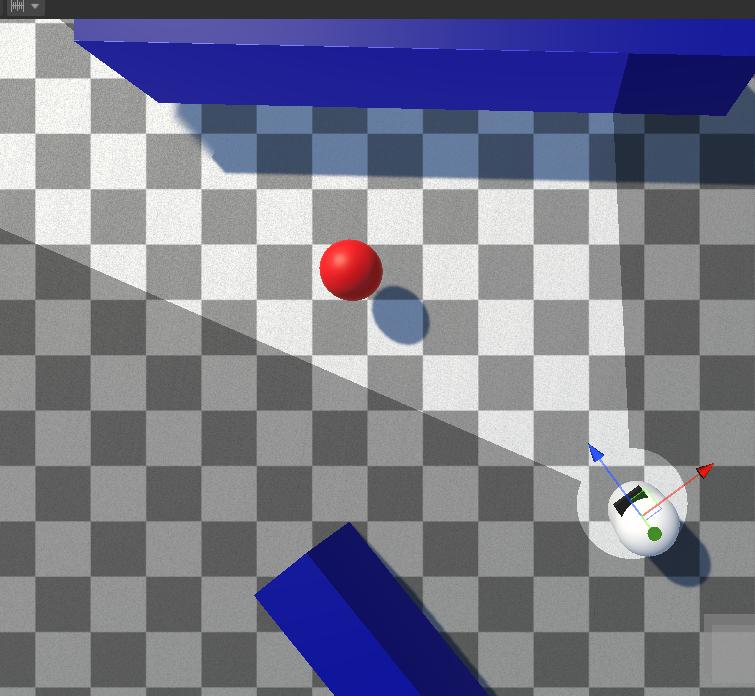
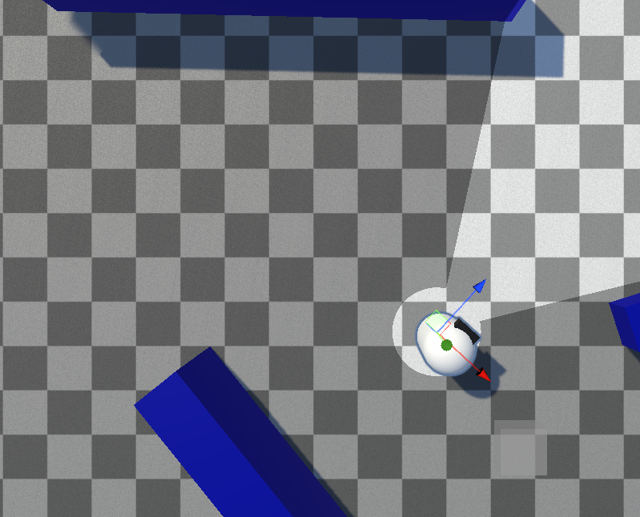
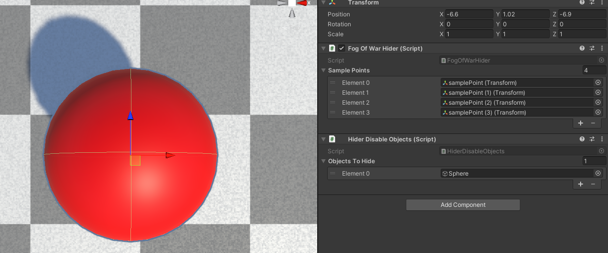

Hiders
Every setting on the Fog Of War Hider component. For how to add a hider, see Getting Started: Hiders.
A hider is hidden whenever all of its sample points fall outside of every revealer's line of sight, and revealed when any sample point is seen. A Hider Behavior decides what actually happens on hide/reveal.



Inspector Properties
| Property | Type | Default | Description |
|---|---|---|---|
| Sample Points | Transform[] | (empty) | The points tested for visibility. The hider counts as visible if any sample point is seen. If left empty, the object's own transform is used. |
| Permanently Reveal | bool | false | Once revealed, the hider stays visible forever and stops being tested. |
Tip
If you use many hiders, keep the number of sample points low — each one is an extra visibility test.
Hider Behaviors
The Fog Of War Hider only detects visibility. Attach a Hider Behavior to act on it:
- Hider Disable Objects — enable/disable a set of GameObjects
- Hider Disable Renderers — enable/disable a set of Renderers
- Hider Toggle Objects — swap revealed/hidden object sets
To write your own, see Custom Hider Behaviors.
Sampling Hiders via the Fog Texture
When using the Texture sampling mode, hiders can be revealed by sampling the fog texture instead of a revealer's direct line of sight (Hiders Use Fog Texture on the Fog Of War World). The opacity threshold is set by Hider Seen Threshold. See Sampling Mode.
Scripting
See the Hider API.